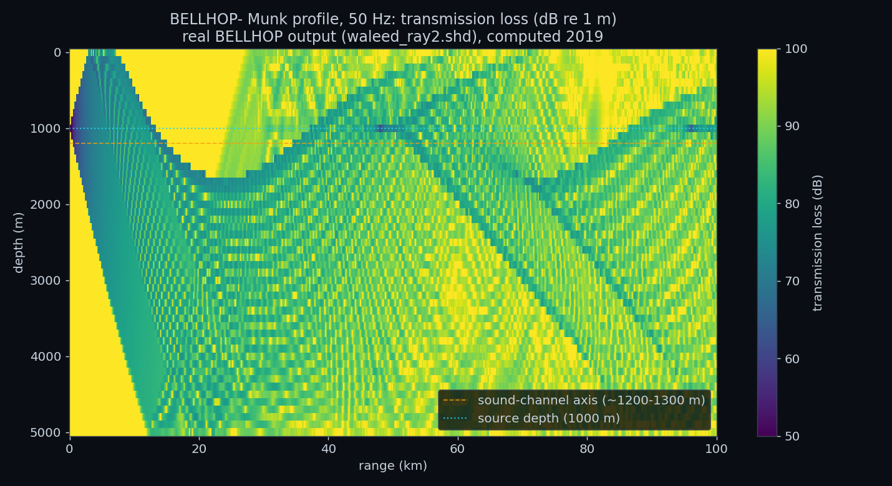
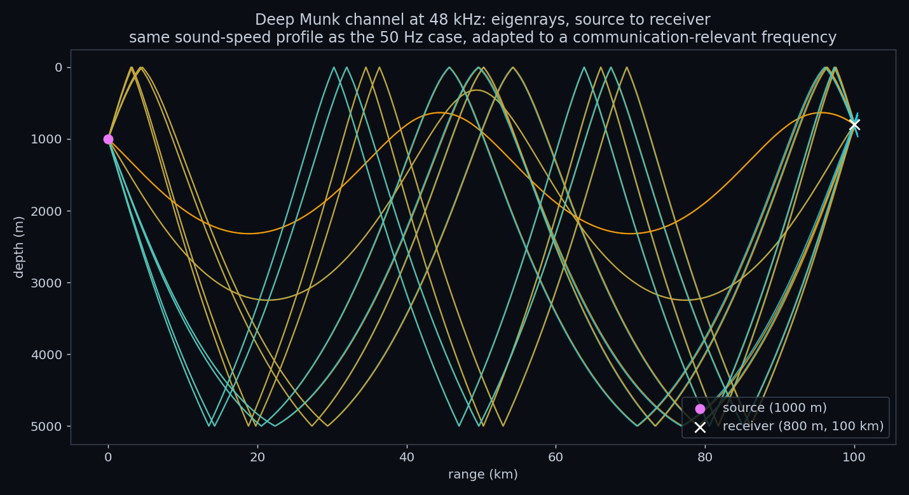
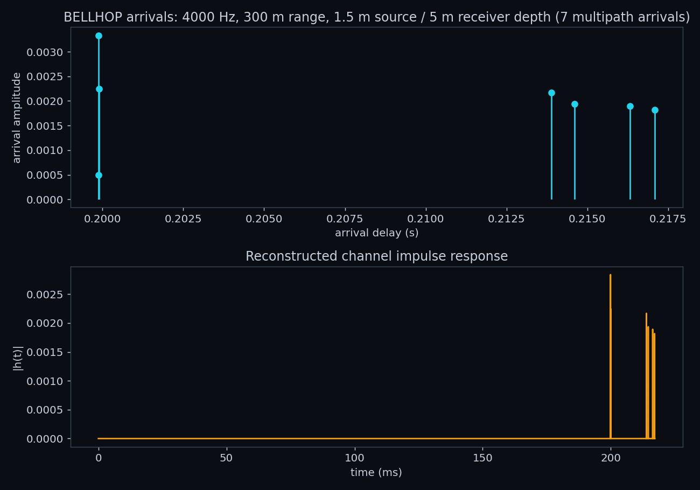
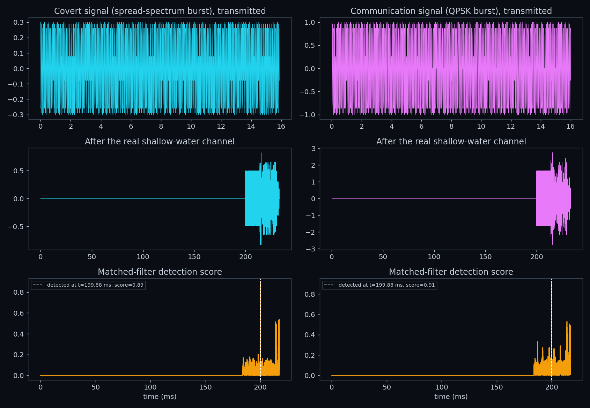

Before an underwater acoustic system, a sonar, a communication modem, a surveillance array, is ever put in the water, whoever is designing it needs to answer a basic question: at this frequency, over this range, in this environment, will the signal actually get through, and what will it look like when it arrives? Physically testing every candidate combination of frequency, range, depth, and season is expensive, slow, and often outright impossible at the scales that matter; no one instruments an entire ocean basin just to check whether a 50 Hz signal reaches a receiver 100 km away. Ray-tracing propagation models exist to answer that question anyway, computationally, from a description of the water column and seafloor alone.
BELLHOP is the standard tool for exactly this. Given a sound-speed profile (how fast sound travels at each depth, set by local temperature, salinity, and pressure) and a source/receiver geometry, it traces the specific paths a signal's acoustic energy actually follows, accounting for refraction and reflection, and turns those paths into a transmission-loss field, a set of eigenrays connecting one particular source and receiver, or a channel impulse response usable for testing detection and communication performance. This is the same computational question faced before any real sonar deployment, underwater modem installation, or acoustic environmental study: predict what a channel will do before committing to hardware or a sea trial.
This report uses BELLHOP for three purposes that mirror how it is used in practice. Section 3 reproduces a well-understood reference scenario, the classic deep-ocean "Munk profile" sound channel, to establish that the tool and this report's own output-reading code produce physically correct results before trusting them on anything new. Section 4 asks a real design question of that same channel: does it still behave sensibly at a frequency realistic for acoustic communication, three orders of magnitude above the classic sonar case it was built for? Sections 5-6 move to an entirely custom shallow-water scenario and use its predicted channel impulse response to test whether a signal is actually detectable in it, exactly the kind of feasibility check that would otherwise require a real sea trial. Section 7 connects all three results back to the real, measured data elsewhere in this portfolio.
Mechanically, BELLHOP traces rays, or equivalently, narrow Gaussian beams, through the water column, bending each one according to the local sound-speed gradient and reflecting it off the surface and seafloor as needed, then combines the resulting paths into whichever output the run calls for: a full transmission-loss field, the specific eigenrays connecting one source-receiver pair, or a list of arrival times and amplitudes for building a channel impulse response. It is distributed as part of the Acoustics Toolbox [1], developed and maintained by Michael B. Porter.
The "Munk profile" [2] is a standard idealized deep-ocean sound-speed profile: sound speed decreases with depth from the surface down to a minimum around 1000-1300 m (the sound-channel axis), then increases again toward the seabed. A ray that enters this channel near the axis is continually refracted back toward it rather than escaping toward the surface or bottom, allowing sound to propagate over very long ranges with far less loss than simple spherical spreading would predict, the physical basis of the historical SOFAR channel. It is one of BELLHOP's standard bundled demonstration cases and a common reference test in the underwater acoustics literature; it is used in this report as a way to reproduce a known, physically well-understood result before adapting the same channel to new conditions.
The transmission-loss field in Figure 1 is not a new simulation. It is read directly from
waleed_ray2.shd, a binary BELLHOP output file genuinely computed in 2019 against the Munk
profile, at 50 Hz, a 1000 m source depth, and a dense 51 x 1001 grid of receiver depths (0-5000 m) and ranges
(0-100 km). BELLHOP's binary output format is not self-describing enough to auto-detect its own array
dimensions reliably for this file, so the parser used here takes the grid size from the run's own
configuration file rather than guessing; see code/README.md for the parser's validation details.

The alternating light and dark diagonal bands visible in Figure 1 are the classic convergence-zone structure of deep-channel propagation: rays leaving the source at different angles refract back and forth across the channel axis, periodically converging to produce bands of higher received level separated by quieter zones, rather than the smoothly decreasing level a simple point-to-point model would predict.
The classic Munk test case runs at 50 Hz, realistic for long-range low-frequency sonar but far below any
frequency used for acoustic communication; this portfolio's own lake-trial report worked in the 3-18 kHz
band. waleedray.env keeps the identical Munk sound-speed profile and source depth but raises the
frequency to 48 kHz and switches BELLHOP to eigenray mode, which finds the specific ray paths connecting the
source to one exact receiver rather than filling a whole grid. Unlike Section 3, this scenario's saved output
was not present among the source materials, so it is re-run here directly through BELLHOP from its own
original configuration file.

Unlike the previous two sections, shalow1.env does not use the Munk profile at all. It
specifies a distinct, custom shallow-water scenario: 4 kHz, a 60 m water column, a source at 1.5 m and a
receiver at 5 m depth, 300 m apart, and a near-isovelocity sound-speed profile decreasing only slightly with
depth (1501.2 m/s at the surface to 1498.7 m/s at 60 m). BELLHOP is run here in ASCII-arrivals mode, which
lists every multipath arrival's amplitude, phase, and delay directly, from which a channel impulse response is
built exactly as in Section 6.

Seven arrivals are found in total: an early, tightly-spaced cluster (the direct path and its immediate single-bounce reflections, which travel almost the same distance in a 60 m water column) followed by a second cluster around 15-17 ms later, corresponding to paths that bounce more times between the surface and bottom before reaching the receiver.
The intellectual core this report is built from is a MATLAB script,
waleedmainfile.m, that convolves two test signals, referred to in its own comments as a "covert"
signal and a "communication" signal, through a BELLHOP-derived channel impulse response, then recovers each by
cross-correlating the channel output against the known transmitted signal: matched-filter detection, the same
Neyman-Pearson framework [3] used to detect a real synchronization pulse in this portfolio's lake-trial
report.
Both signals are passed through the exact channel impulse response computed in Section 5, from the shallow-water scenario's real multipath arrivals, not an idealized or synthetic channel.

This report's three scenarios form a deliberate progression: reproduce a known reference case and confirm it matches physical expectation, adapt that same channel to a new, more relevant frequency, then move to an entirely custom scenario and use its output for a real detection task. Transmission loss matches spherical-spreading theory, eigenrays land on the specified receiver, arrival delay matches simple travel-time geometry, and detection scores clear a near-zero noise floor by a wide margin.
That same discipline connects this report to the rest of the portfolio. The lake-trial report measured a real channel's coherence time and signal-to-noise ratio directly from field recordings; this report predicts comparable channel behavior, multipath spread and delay, from first principles, for a channel that was never physically measured at all. The DSP report's matched-filter detector, verified there on a synthetic pulse and proven on the lake trial's real synchronization signal, is the same detector applied here to a simulation-derived channel. Simulation and measurement are different tools answering the same underlying question, and this portfolio now has a result from each.